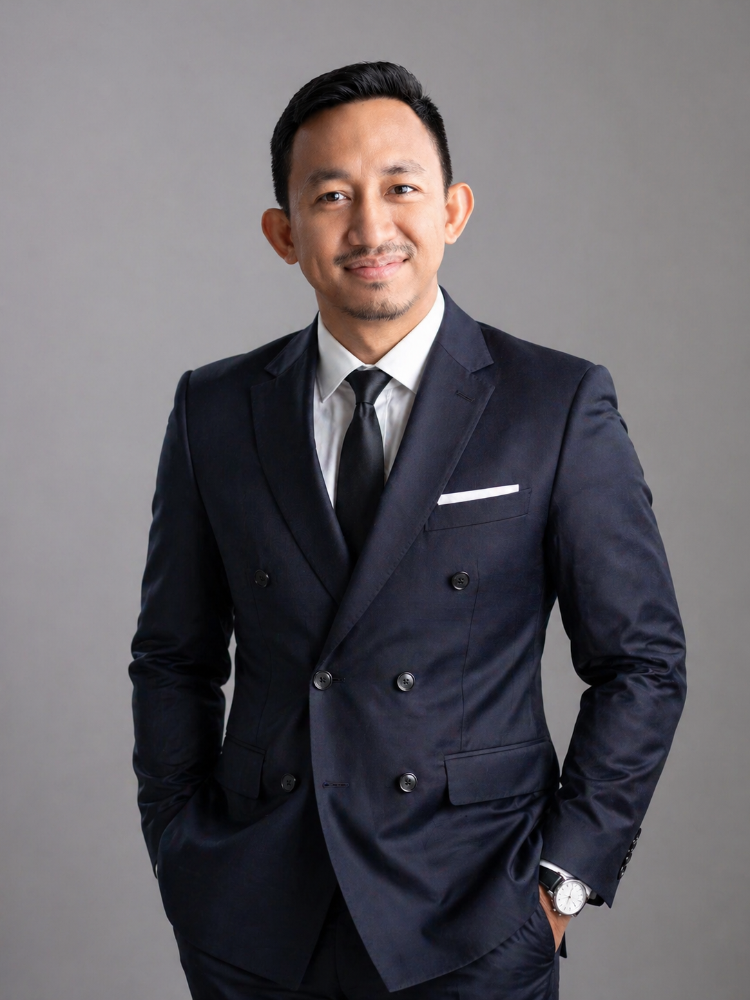

The book
Belajar Laravel Melalui Contoh
A Bahasa Melayu guide that teaches Laravel through worked examples — written from years of workshop material and real delivery work.
Read at pisyek.comSenior Software Engineer · Technical Trainer · Cyberjaya, Malaysia
Fifteen years across Laravel, DevOps and enterprise delivery. I ship at Ideagen, and train developers through Pisyek Studios.

Open to consulting & training
Worked with
01 About
I’ve spent fifteen years making software that behaves the same on a quiet Tuesday as it does on launch day. That means readable code, tests that mean something, and delivery pipelines nobody has to babysit — the unglamorous work that lets teams move quickly without breaking things.
I also teach it. Through Pisyek Studios I’ve trained more than a hundred developers since 2021, turning the lessons from enterprise delivery and my MSc research on test reliability into workshops people can use on Monday morning.
02 What I do
From hands-on delivery to the architecture and training that make delivery repeatable.
Laravel and PHP systems built to last: API performance, legacy modernisation, CI/CD and automated testing that catches problems before your clients do.
Hands-on Laravel, Docker, Git, testing and CI/CD workshops for students, junior engineers and working professionals. 100+ participants since 2021.
Enterprise architecture using TOGAF ADM, system design, delivery reviews and mentoring — practical guidance grounded in shipped systems, not slideware.
Selected impact
03 Experience
Newest first. A parallel practice runs alongside the full-time roles.
Jul 2024 — Present
Ideagen Current Kuala Lumpur
Cut bugfix and code review cycles from three days to one with a custom Claude agent, and took API response times from minutes to under a second.
Nov 2011 — Present
Pisyek Studios Current Parallel practice
Builds custom web systems end to end and has trained 100+ developers through hands-on Laravel, Docker and CI/CD workshops.
Feb 2022 — Jun 2024
RunCloud Cyberjaya
Shipped features across the Laravel API, Vue dashboard and Go server agent for a platform managing 50,000+ servers — and led its certification training programme.
Nov 2019 — Jan 2022
Experian Kuala Lumpur
Developed features on a social advertising platform used by UK teams, automating internal processes with shell, Python and Flask dashboards.
May 2017 — Nov 2019
Sunway Group Selangor
Delivered supplier web and split purchase order features for Sunway’s e-Procurement platform, reviewed code and mentored interns.
Apr 2012 — May 2017
PETRONAS Kuala Lumpur
Ran recruitment and HR planning for finance divisions — while keeping Pisyek Studios and writing code throughout.
Jun 2010 — Jan 2011
Terato Tech Bandar Baru Bangi
Built web applications with CodeIgniter during an eight-month internship that started the path into professional software.
04 Training & writing
Workshops, a book and a decade of tutorials — built from real projects, not theory.
The book
A Bahasa Melayu guide that teaches Laravel through worked examples — written from years of workshop material and real delivery work.
Read at pisyek.comWorkshops
100+ participants since 2021 — students, junior engineers, working professionals and university lecturers.
05 Contact
If you need a Laravel or DevOps partner, an architecture review, or training that actually changes how your team works — let’s talk.
hafizsuhaimi@gmail.com · linkedin.com/in/hafizsuhaimi · pisyek.com · Cyberjaya, Malaysia
Open to consulting, training and architecture engagements.